01. Traduction légalisée
Juridique, médical, administratif, scolaire et académique. Français, anglais, espagnol, portugais, italien, arabe, wolof, japonais et coréen.
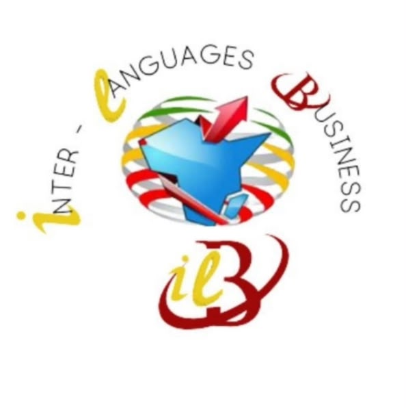
Traduction • Interprétation • Assistance voyageTraduction, interprétation et assistance voyage. Nous facilitons la communication entre les personnes, les entreprises et les organisations, avec précision, confidentialité et élégance.
Inter-Languages Business est une entreprise spécialisée dans la traduction, l'interprétation et l'assistance voyage. Nous facilitons la communication entre les personnes, les entreprises et les organisations, en proposant des solutions linguistiques adaptées à chaque besoin.
Notre engagement : vous offrir un service fiable, professionnel et confidentiel.
Cabinet officiellement agréé par le Ministère de l'Intégration et des Affaires Étrangères (Dakar, Sénégal).
Juridique, médical, administratif, scolaire et académique. Français, anglais, espagnol, portugais, italien, arabe, wolof, japonais et coréen.
Conférence, consécutive, simultanée, liaison et chuchotée. Une interprétation maîtrisée et adaptée à chaque contexte de communication.
Une assistance destinée à faciliter vos démarches et vos échanges dans le cadre de vos projets de mobilité internationale.
Parce que chaque langue est une porte ouverte sur le monde, nous brisons les barrières de la communication avec précision et élégance pour accompagner tous vos projets internationaux.
Microphones de conférence, cabines, sonorisation et matériel audio de haute qualité pour vos événements et réunions.
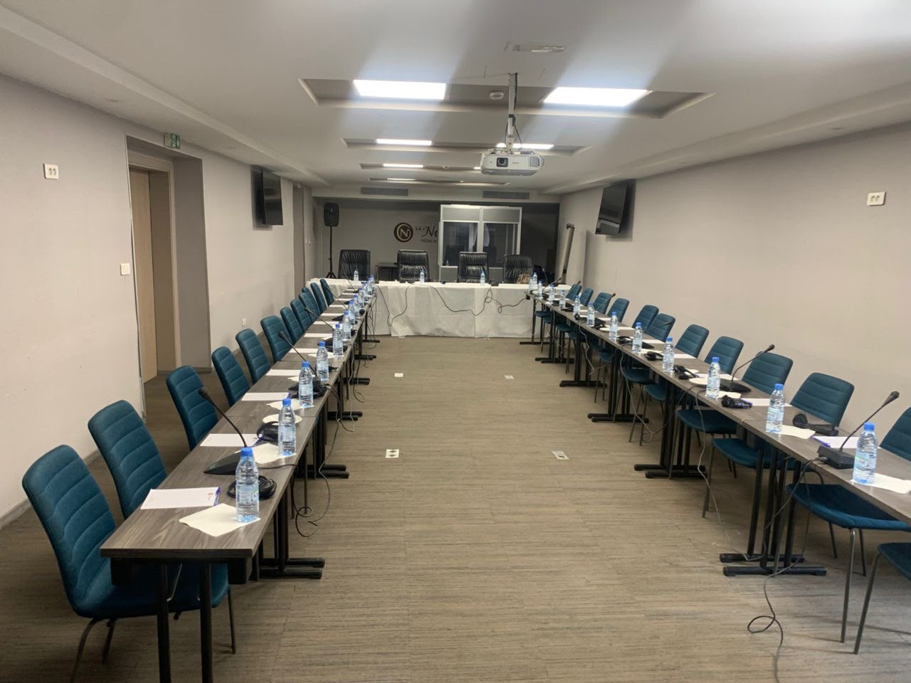
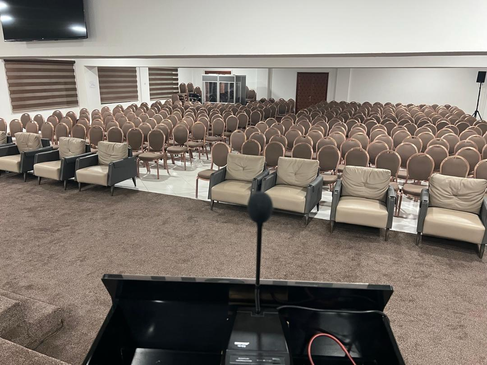
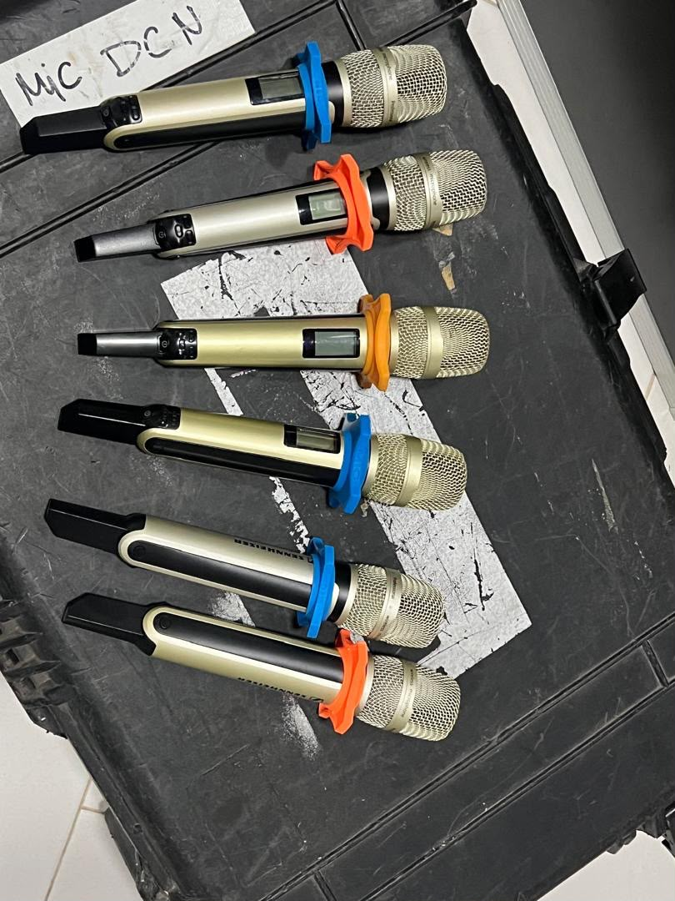
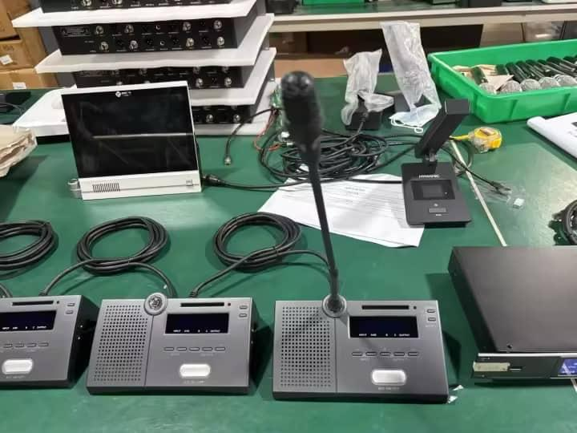
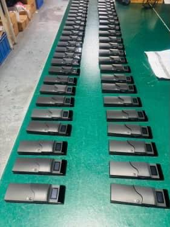
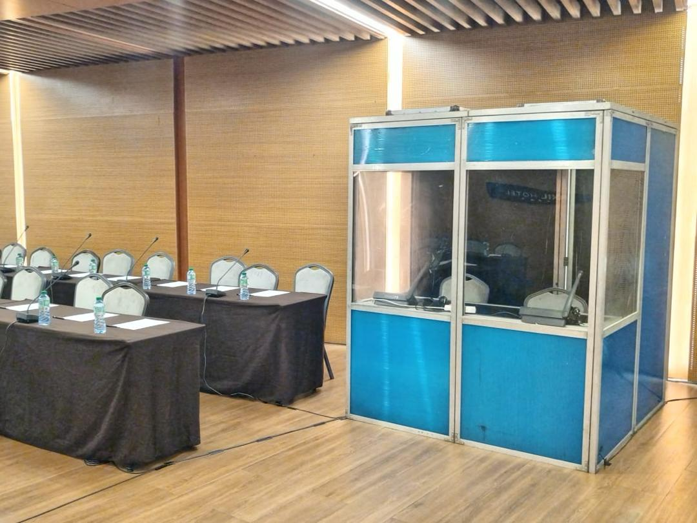
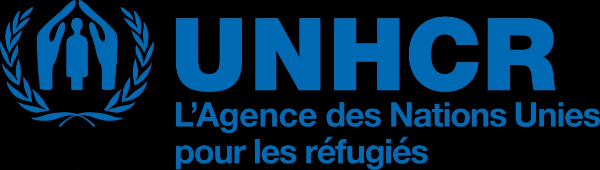
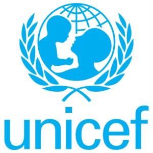
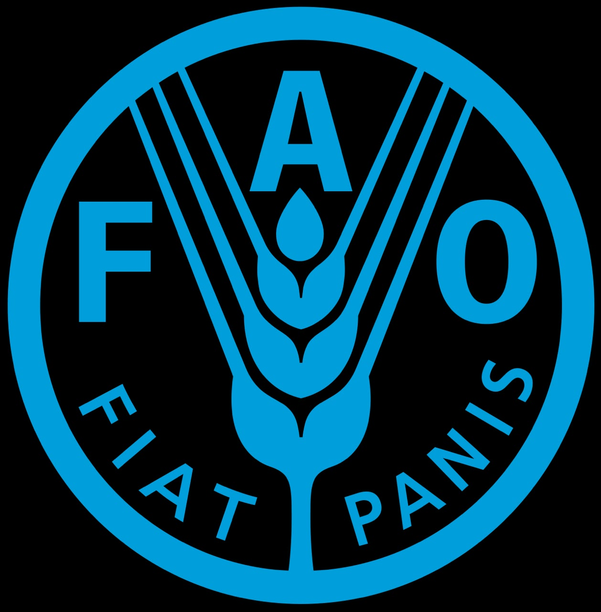
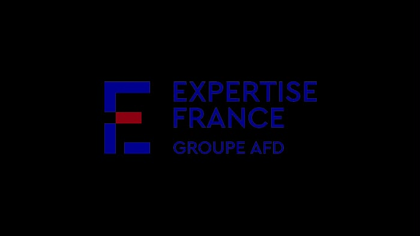
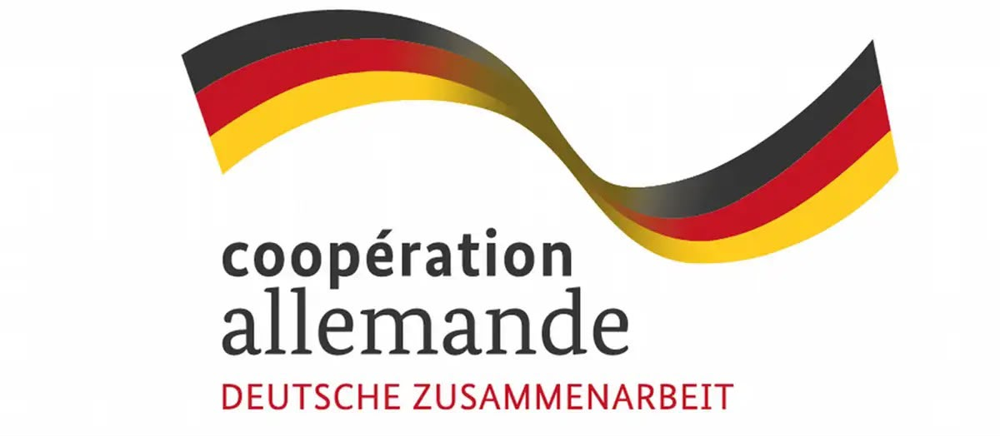
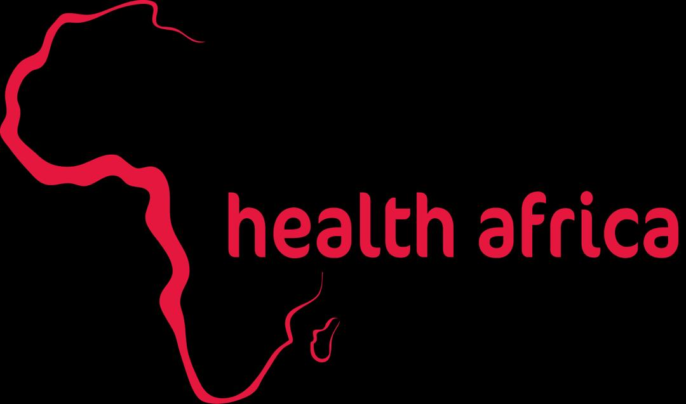
Vous avez besoin d'une traduction, d'un interprète ou d'une assistance voyage ? Demandez votre devis.
Téléphones : +221 78 186 78 93 / +221 78 389 54 60
Email : africaup.sn@gmail.com
Adresse : 03 Rue Bérenger Féraud, CTIC — Dakar, Sénégal